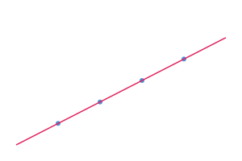

A base + covariate model, reproduced by a second party and reviewed — assembled from a plankton import of workbench steps
- Lineage:
fit.svg← the final (covariate) model ← the base model ← the QC'd dataset ← the raw data — the workbench step tree, by content hash. - Two participants:
Administratorran it;test1independently reproduced every output byte-for-byte (a second colour on the graph). - Attested judgments:
model-role: base / final(pmx), the child modelwasRevisionOfthe base, and the reviewer's sign-off onfit.svg(pav:reviewedBy· schema:AcceptAction).
A one-compartment base model and a covariate (final) model were fit to a QC'd
dataset. Each step is a signed foton — inputs → protocol → outputs, addressed by
SHA-256 — recovered from a live modeling-workbench repository. Nothing here asks for trust: the figure's bytes
re-hash to a recorded output, each producing record is signed, the run was independently reproduced
by a second user, and the final model was reviewed — all visible by clicking the lens.
Model fit

Reproducibility
The four outputs — clean.csv, params_base.csv,
params_child.csv, fit.svg — were re-run independently by test1
in a separate tree and matched byte-for-byte (an L0 reproduction). The final model's
visualisation was accepted by the reviewer. Both attestations are signed claims on the same graph
nodes the figure descends from — open the lens and walk to them.